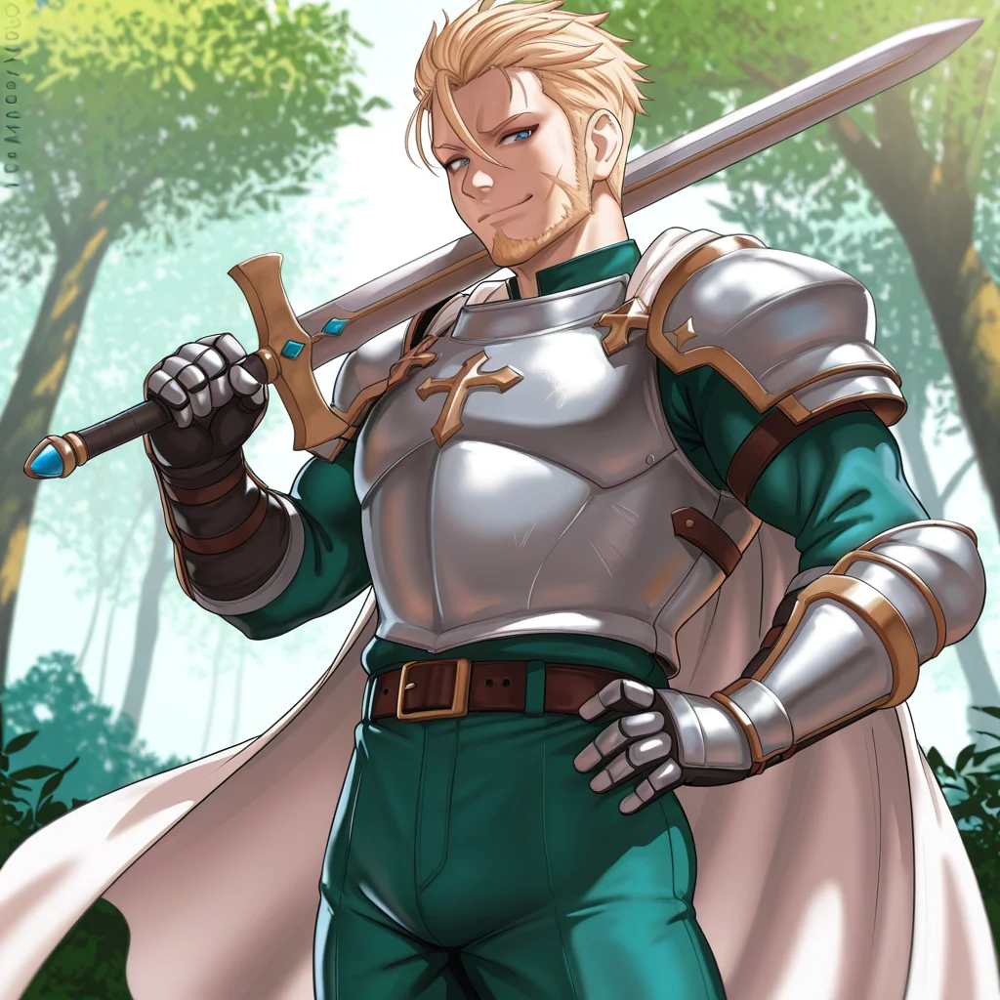
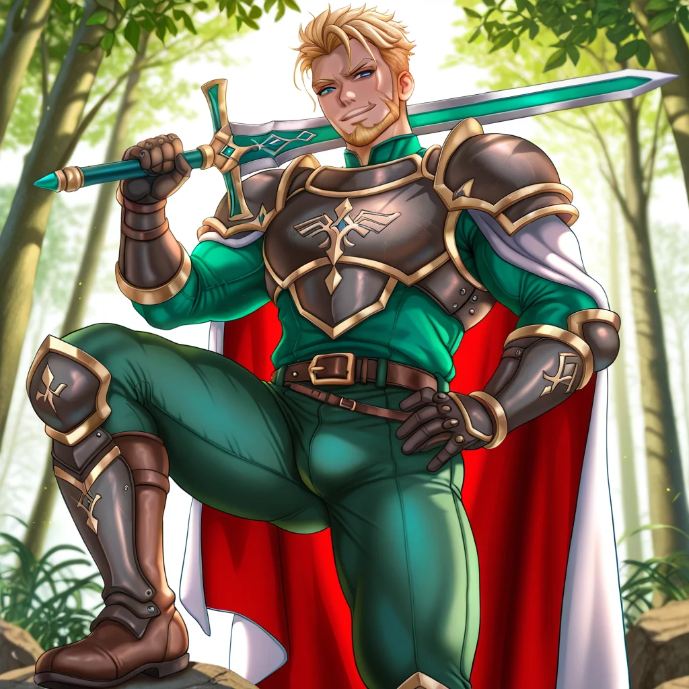
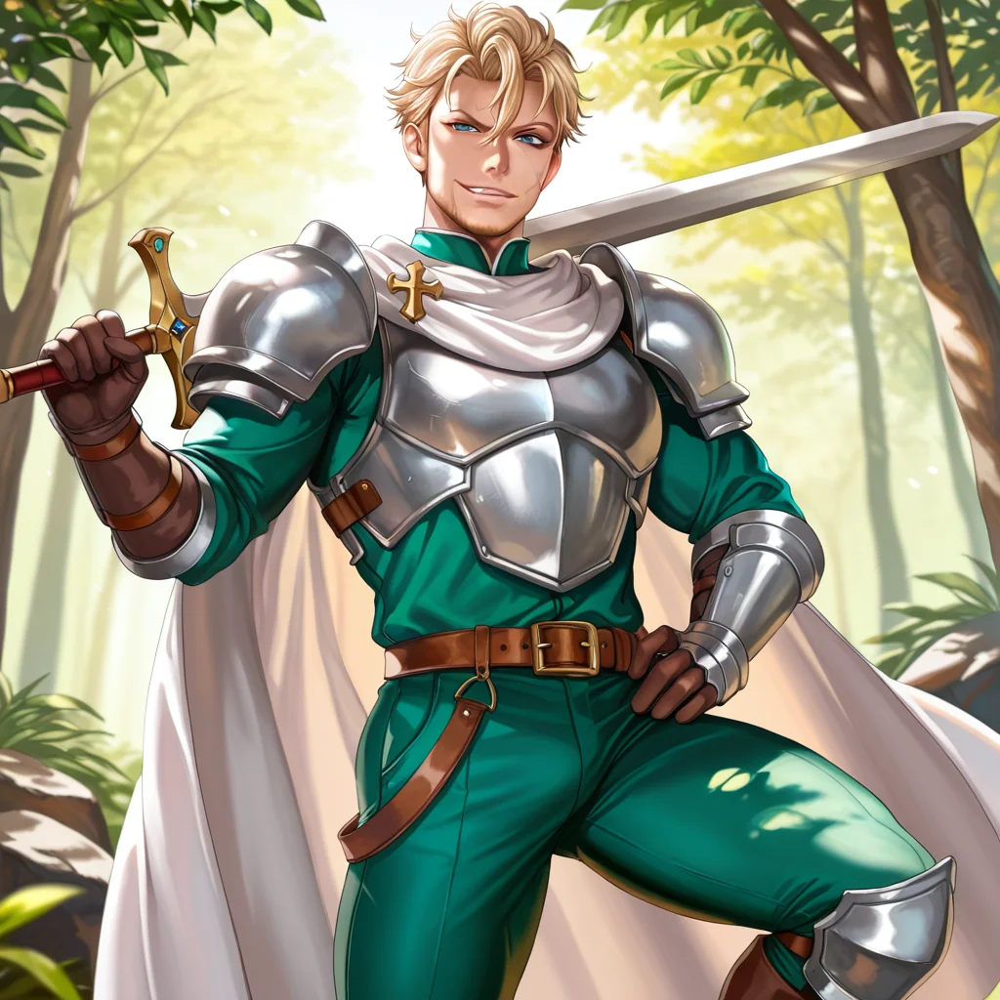
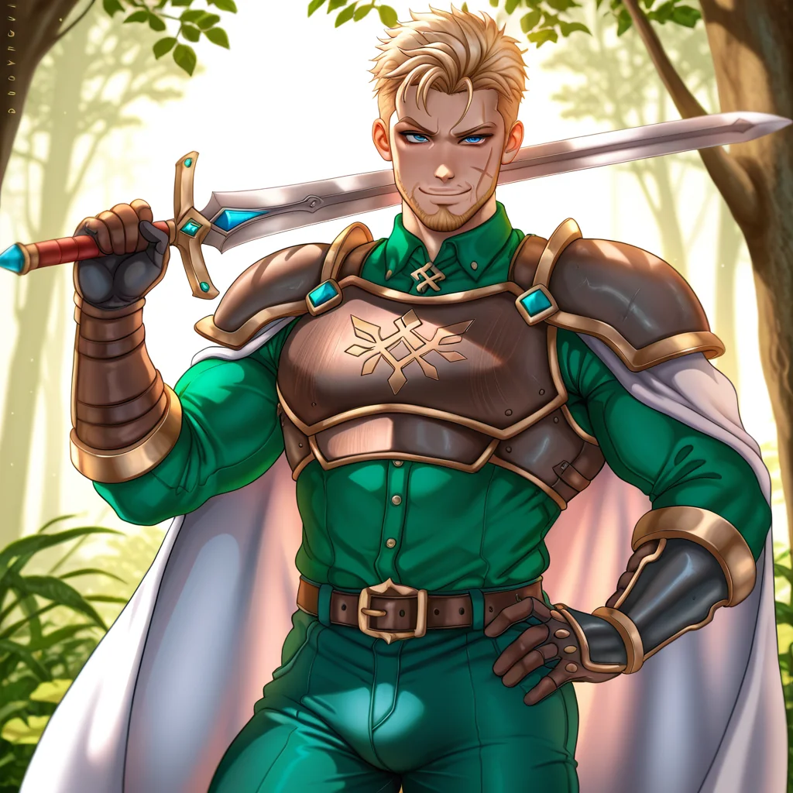
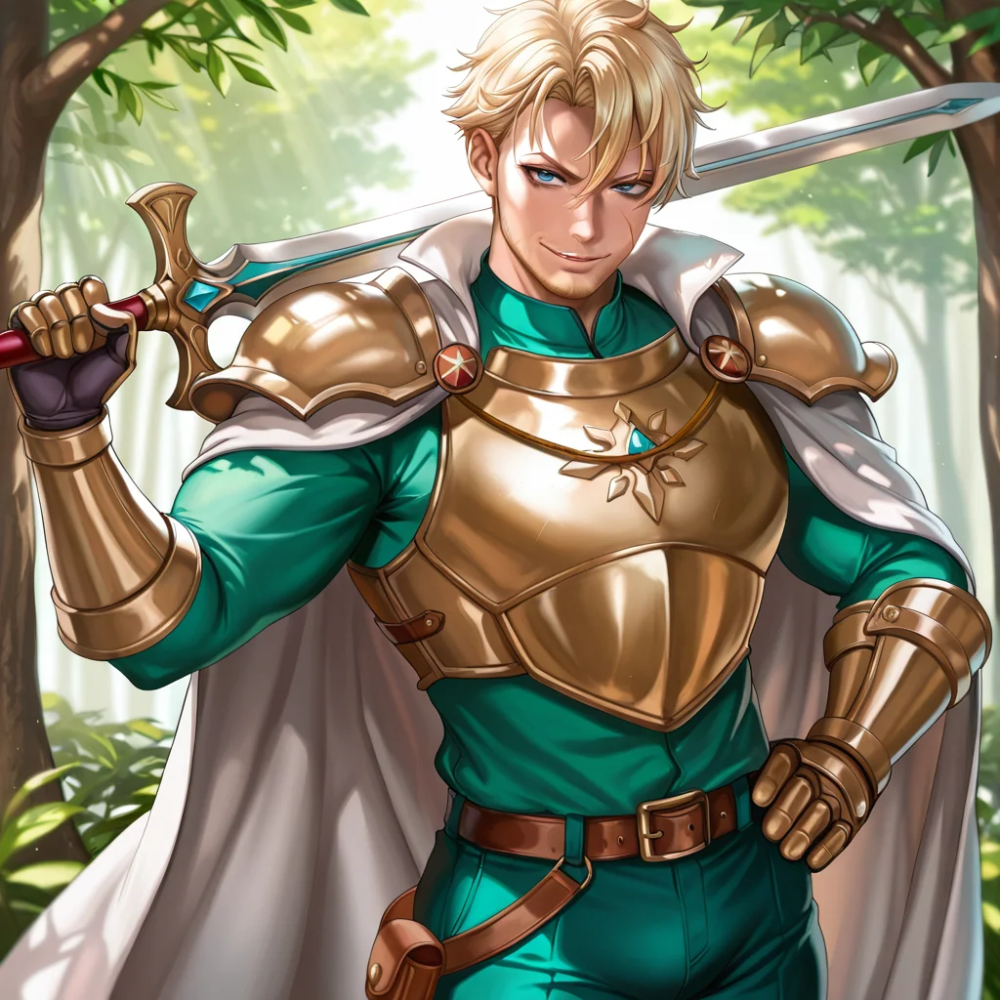

img2
20251102_045759_saber_daz-dandon_fuga-shiseki_hirame.webp [1/8]
1024×1024 • 1:1 • 99.0 KB

20251102_045759_rance_daz-dandon_fuga-shiseki_hirame.webp [2/8]
1024×1024 • 1:1 • 125.4 KB
20251102_045747_saber_daz-dandon_fuga-daram_shappydude.webp [3/8]
1024×1024 • 1:1 • 93.2 KB

20251102_045747_rance_dazzer-dandon_fuga-daram_shappydude.webp [4/8]
1024×1024 • 1:1 • 141.4 KB

20251102_045646_rance_dazzer-dandon_fuga-momoko_momopoco.webp [5/8]
1024×1024 • 1:1 • 124.7 KB

20251102_045646_rance_daz-dandon_fuga-daram_shappydude.webp [6/8]
1024×1024 • 1:1 • 127.4 KB
20251102_045641_saber_daz-dandon_fuga-momoko_momopoco.webp [7/8]
1024×1024 • 1:1 • 98.7 KB

20251102_045641_rance_daz-dandon_fuga-momoko_momopoco.webp [8/8]
1024×1024 • 1:1 • 137.2 KB